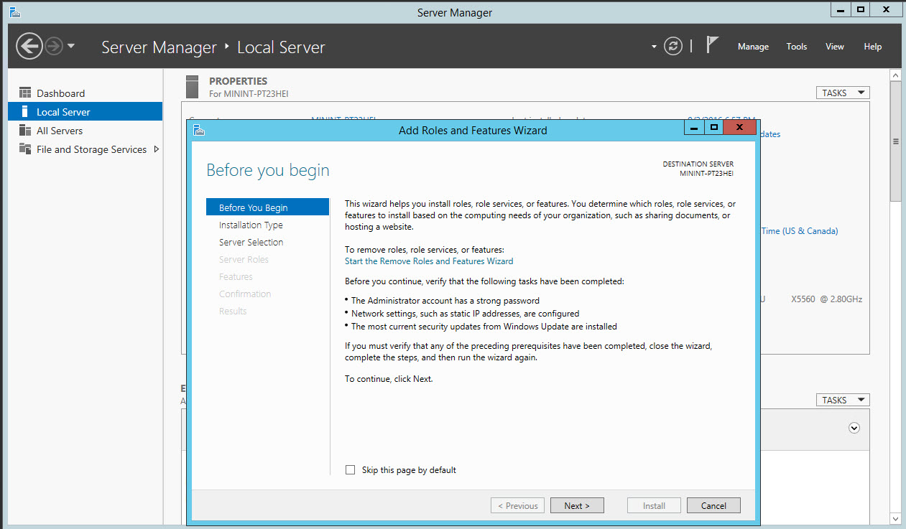

Installing UTA on Windows Server 2012 R2¶
Authors: Brett Burbidge
Install IIS¶
Open Server Manager
Go to Local Server
Click on Manage (top right corner)
Click Add Roles and Features

On the Add Roles and Features Wizard
Click Next
Select Role-based or Feature-based installation
Click Next
Select a server from the server pool (this server will already be selected in the Server Pool list)
Click Next
Find Web Server & check the box
Click Add Features in the dialog window
Click Next
Under .NET Framework 4.5 Check ASP.NET 4.5 if available
Click Next
Click Next again
- Select the following Roles Services (Check each role listed below)
- Common HTTP Features
Default Document
Directory Browsing
HTTP Errors
Static Content
- Health and Diagnostics
HTTP Logging
- Performance
Static Content Compression
- Security
Request Filtering
Windows Authentication
- Management Tools
IIS Management Console
Click Next
Click Install
Verify IIS installation¶
Click the windows start button (lower left corner)
Type the letters iis
Select the top option Internet Information Services (IIS) Manager
Warning
If IIS Manager does now show up in the search; restart the server and then retrace the steps above.
Expand the top node (This will be the server name)
Click No if asked to stay connected to the latest Web Platform Components… (check Do not show this message, if so inclinded)
Ensure the top node is selected and double click on the Request Filtering icon
Ensure the list is emtpy
Traffic Install¶
The following steps will guide you through the Traffic & Alarms installation.
Copy Install Files¶
Important
The applicaiton will run where the files are placed.
If you place the files in C:UsersBobUTA1.0.1.1 they will run from that location. The files are not copied to different locations during the installation. Typically enterprise server installations have an E or D drive where applications run from. References to X:indicate the drive you choose to run.
Copy the UTA#.#.#.#.zip file to X:UTA folder
Extract the .zip file in X:UTA
The result will look like the following
Verify the following settings by following the steps below¶
Open IIS on the web server
Verify: In Application Pools you should have a UTA app pool
Verify: In the Default Web Site you should see a UTA directory with the UTA App Pool
Click the UTA directory then click the Basic Settings action on the right pane to verify installation.
If both of these check out, continue, if not please retrace the steps above.
IIS Settings - Authentication¶
Open IIS and select the UTA folder under the Default Web Site
There are 3 different Authentication options.
Forms - Uses a username and password¶
This is the easiest to configure but NOT JITC certified.
IIS Settings
ASP.NET Impersonation: Disabled
Basic: Disabled
Digest: Disabled
Anonymous: Enabled
Forms: Enabled
Windows: Disabled
App Settings
Authenticaiton_Mode: Forms
Windows – Uses the users domain credentials to login¶
This is easy to configure and also JITC certified.
Note
Only users on the current domain will be able to access UTA.
IIS Settings
ASP.NET Impersonation: Disabled
Basic: Disabled
Digest: Disabled
Anonymous: Disabled
Forms: Disabled
Windows: Enabled
App Settings
Authenticaiton_Mode: Windows
Certificate – Uses the users CAC Certificate to login¶
Note
This is more complicated to configure and requires that the server has a HTTPS certificate from an certified authority. This is JITC certified. Any users in or out of the domain will be able to access UTA. The UTA machine name or DSN entry might have to be whitelisted.
IIS Settings
ASP.NET Impersonation: Disabled
Basic: Disabled
Digest: Disabled
Anonymous: Enabled
Windows: Disabled
Forms: Disabled
App Settings
Authenticaiton_Mode: Certificate
Create Database¶
Open SQL Management Studio
Right Click on Databases
New Database (Name it traffic and select a location), click OK
Add Database User to Traffic Database.
Note
An existing CairsUser can be used or a new one created
Under Security, Logins, Create or select a User
Go to User Mapping page and select Traffic, then select db_owner
Click Ok to close the dialog box
The Cairs Connection¶
UTA queries the CallRecord table in the Cairs database for some reports. The following steps go through how to configure the connection.
Note
This is a one-way connection. UTA only reads from the CallRecord table for reports, it does not write any data to Cairs.
Add the Cairs database connection string in two places¶
In IIS Settings
Open IIS, select Default Web Site, Select UTA, double click on Application Settings.
Edit CAIRS_CONNECTIONSTRING set Value to the cairs database connection string.
- image of iis settings….